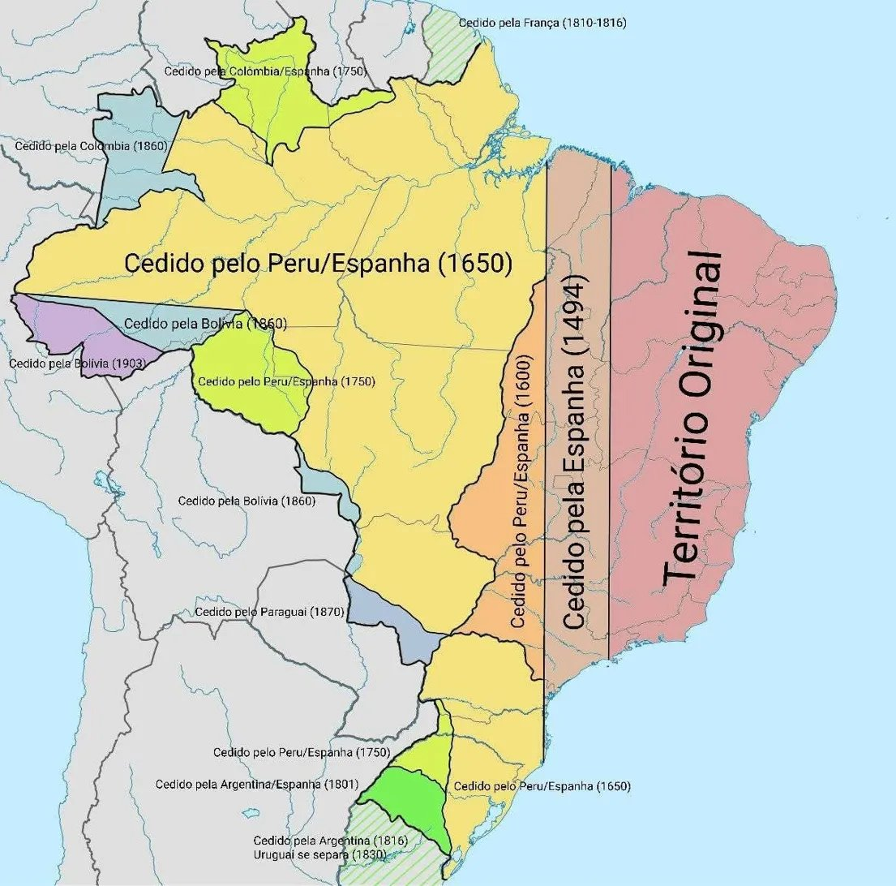

Clique no mapa - Coord:
🗺
Selecione uma Região
Clique em qualquer área colorida do mapa ou nos itens da legenda acima para ver os eventos históricos e diplomáticos detalhados.
📜 Tratado de Tordesilhas (7 jun. 1494) — Linha a 370 léguas a oeste de Cabo Verde dividia o mundo entre Portugal (leste) e Espanha (oeste). Se respeitada, o Brasil colonial seria apenas a estreita faixa costeira nordeste/leste. A expansão bandeirante e o princípio do uti possidetis — quem ocupa, possui — multiplicaram o território até os 8,5 milhões de km² atuais, tornando o Brasil o 5º maior país do mundo.